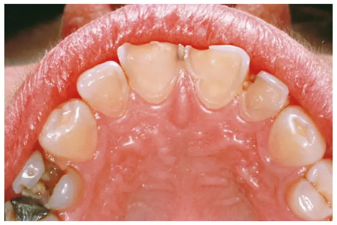
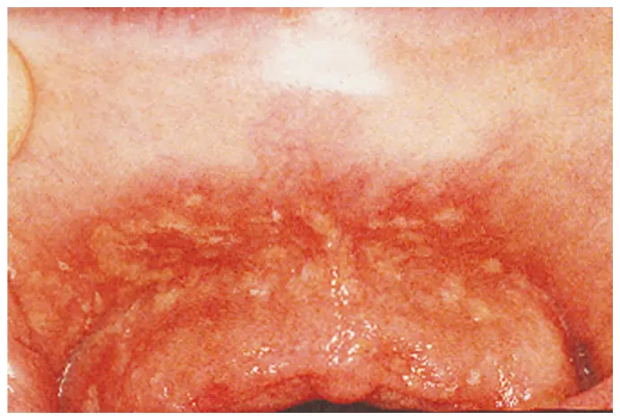

نسخه استخراجشده؛ ترجمه یا تأیید علمی انجام نشده است. وضعیت: captured
مرد ۵۲ سالهای پس از جراحی دندان عقل ایبوپروفن میخواهد. در شرح حالش زخم اثنیعشر و دو سال پیش یک خونریزی گوارشی ثبت شده است. چه مسکنی میدهی؟

زخم پپتیک شکافی در مخاط معده یا اثنیعشر است؛ زخم اثنیعشر شایعتر است. علت اول H. pylori (حدود ۷۰٪) است و علت دوم NSAIDها (حدود ۳۰٪) که زخمشان بیشتر در معده است. سیگار، الکل، کورتیکواستروئید و ضدانعقاد خطر را بیشتر میکنند.
ریفلاکس (GERD): سوزش سر دل و برگشت اسید؛ در دهان فرسایش سطح پالاتال و لینگوال دندانها. فلوراید با تری اختصاصی بده و در علائم فعال پشتی صندلی را حدود ۴۵ درجه نگه دار.
H. pylori در پلاک دندانی هم یافت میشود. آنتیبیوتیکهای درمانش ممکن است کاندیدیازیس و گلوسیت میانی لوزیشکل بدهند.
بیماری خفیف (کمتر از ۴ بار اجابت مزاج در روز، خون کم یا بیخون، بیتب، ESR زیر ۲۰): درمان در مطب. بیماری متوسط یا شدید (شدید: ۶ بار یا بیشتر با خون، تب، کمخونی، ESR بالای ۳۰): درمان انتخابی را عقب بینداز و ارجاع بده. نوبتها را در دورهی خاموشی بگذار.

کولیت سودوممبرانو: رشد بیش از حد C. difficile پس از آنتیبیوتیک؛ بیشترین خطر با کلیندامایسین، سپس آموکسیسیلین، آمپیسیلین و سفالوسپورینها، بهویژه در سالمند. اسهال از ۱ روز تا ۸ هفته پس از دارو میآید. آنتیبیوتیک را قطع کن و بیمار را فوری به پزشک بفرست. در بیمار IBD تا جای ممکن کلیندامایسین نده و بگو اگر اسهال تازه آمد، فوراً خبر دهد.